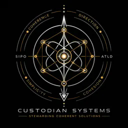

Find the real cause
Trace repeated delays, errors, wasted effort or customer problems back to the part of the business actually causing them.

Custodian SystemsPractical problem-solving, software and decision supportPractical help for small businesses and complex organisations
Custodian Systems helps small businesses and organisations solve difficult practical problems: improving workflows, fixing technical bottlenecks, using AI sensibly, building useful software, reviewing decisions and finding the real cause when the obvious fix has not worked.
Coherence · Direction · Simplicity · Cohesion
What we can actually help you do
We can help diagnose it, improve the process, build or repair the technical part and leave you with a result you can use.
Trace repeated delays, errors, wasted effort or customer problems back to the part of the business actually causing them.
Simplify handovers, repeat work, administration and multi-step processes so fewer things are forgotten, duplicated or dropped.
Shape practical AI support for research, documents, customer work, internal knowledge or repetitive tasks without buying theatre.
Separate facts, assumptions, risks and options so you can see what matters and what should happen next.
Create small tools, prototypes and working systems—or diagnose why an existing technical route is failing.
Bring a stalled plan, supplier proposal or technical problem and receive a direct assessment with practical next steps.
How we work
We do not ask a small business to learn our method before we can help. We use the method internally to avoid shallow fixes, missed dependencies and answers that create another problem elsewhere.
What you bring
What we return
ATLD beneath the surface
Our structural method keeps the people, process, technology, constraints and consequences in view together. It is there to improve the work—not to make the client decode abstract language.
Where this can apply
Fix friction, unclear processes and repeated wasted effort.
Build, review or repair systems that have a clear job.
Find the dependency local checks missed.
Separate observation, inference, uncertainty and conclusion.
Understand what changes when normal conditions stop.
Map consequences, constraints and genuine options.
Test proposals, plans and technical claims before commitment.
Keep distinctions clear while joining what genuinely belongs together.
Current evidence
We publish selected outcome-level evidence while keeping implementation detail private.
Recorded systems audit
A substantial multi-document research stack was audited and revised as one interdependent object rather than isolated files.
Recorded scale: 11 sequential commits across 11 interdependent files, 1,241 changed lines, complete readback and final system-level audit.
One observed live result. It is not presented as an externally replicated benchmark.
Programme status
ATLD is a working, auditable architecture with meaningful internal results. The next stage is controlled evaluation, client work and research partnership.
A lasting model
Start
Direct help with a real problem, decision, workflow or technical fault.
Build
Successful work becomes a process, tool or system that keeps helping.
Scale
Proven methods become software-assisted capability for teams and organisations.
Mission
Build systems that leave people and organisations stronger than we found them.
Custodian Systems exists to improve reasoning, decisions and software through useful work that strengthens the whole object. We intend to grow through truth, cohesion, retained trust and results—treating people with dignity, building capability and doing more rather than promising more.
LGCDT
Human worth is not a secondary constraint.
Repair and return must remain possible.
The system should become stronger together.
People are not fuel, inventory or collateral.
Reality outranks convenience, fashion and noise.
Start with the problem
Describe the business problem, technical issue, decision or failure in plain language. We will tell you honestly whether Custodian Systems can add value.
mark1664@proton.me